用户中心管理系统是怡合达为企业用户提供的一套集中式用户、权限、应用管理服务，帮助您整合内部办公系统，业务系统的用户信息、组织架构信息和权限控制，实现所有系统只有一套用户信息，一套组织架构信息，管理各个业务系统的二级权限的系统。
本系统暂时只有管理员才能维护。
该系统用于怡合达内部系统需要用到员工信息，组织架构信息和权限控制的系统。
1，看板；
2，SOP 手册；
3，应用管理；
4，用户管理；
5，数据字典管理；
6，组织架构管理；
7，授权管理；
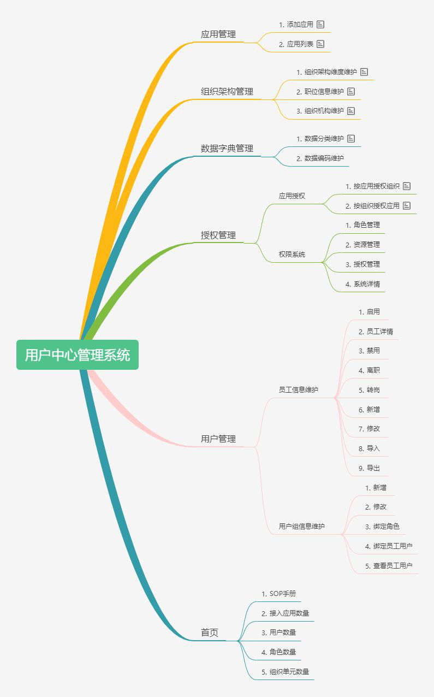
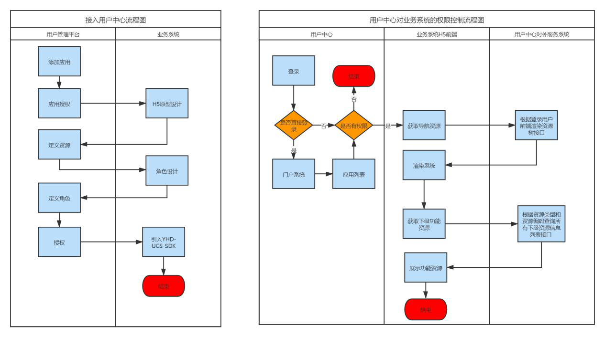
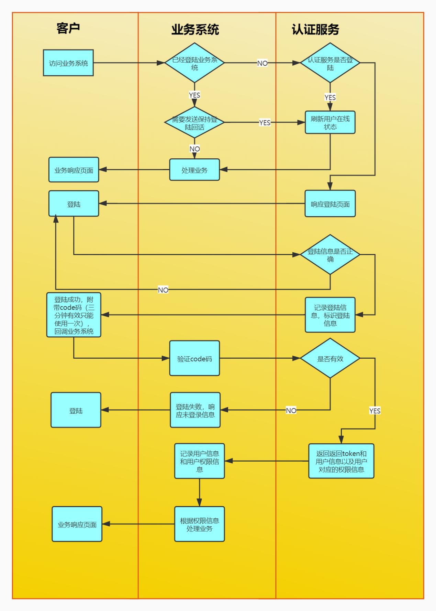
应用图标：应用的 logo
应用中文名称：业务系统的中文全称；
应用英文名称：业务系统的英文简写，很重要。用户中心用来生成资源ID的，资源ID是指接入用户中心的系统编码，如下面用英文名称，用户中心会给云制造系统生成一个yhd-service-yzz 的资源 ID，资源id就是开发系统的应用名。
应用类型：分为 web 应用和 app 应用两种，暂时只支持 web 应用；
应用分类：
应用简介：简单介绍应用系统的详细内容，不能超过三百字。
开发负责人：用来做应用系统修改信息的通知人。
应用系统首页地址：业务系统接入用户中心后默认的回调 URL；
通知类型：员工信息变更是否通知设置；
员工信息变更通知地址：业务系统用来接收全部员工信息的通知地址；
组织架构信息变更地址：业务系统用来接收全部组织架构信息变更的通知地址；
推送类型：员工信息和组织架构信息变更的通知类型；
通知邮箱： 接收应用接入后的appId和密钥以及资源id
支持的授权模式：可以哪种方式获取token
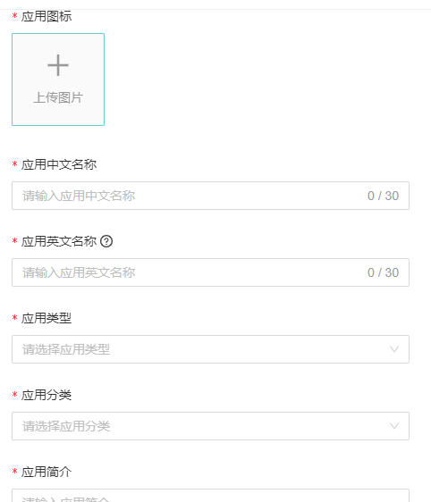
注： 绑定应用只允许单个系统使用该用户组；绑定公司名称后，这个用户组只能绑定这个公司内的人，不选择可以选择所有公司的人管理员新增三个用户组用来绑定下面的角色，需要添加的三个用户组分别是:
FB 系统-跟单员用户组(fb-cim-cms-group-pmc);
2,FB 系统-管理员 (fb-cim-cms-group-admin);
3,FB 系统-工程师用户组(fb-cim-cms-group-engine);
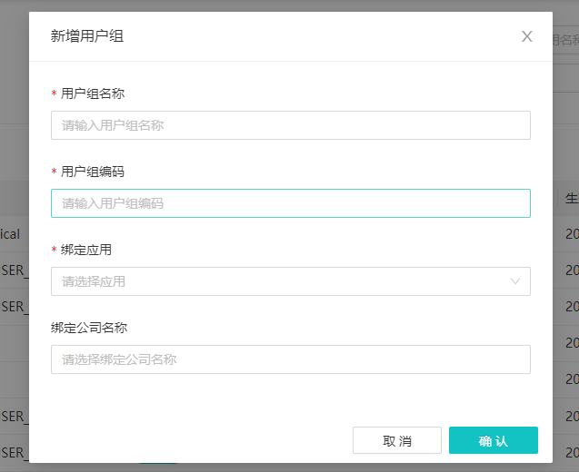
各个用户组去绑定对应的员工。操作步骤：点击绑定员工（如下图2-1）-->在弹出的抽屉中可以看到未绑定员工列表 --> 勾选未绑定员工列表中的数据（如下图2-2） --> 点击批量绑定。当然也可以直接点击抽屉右侧数据列表中的绑定按钮进行单独绑定。
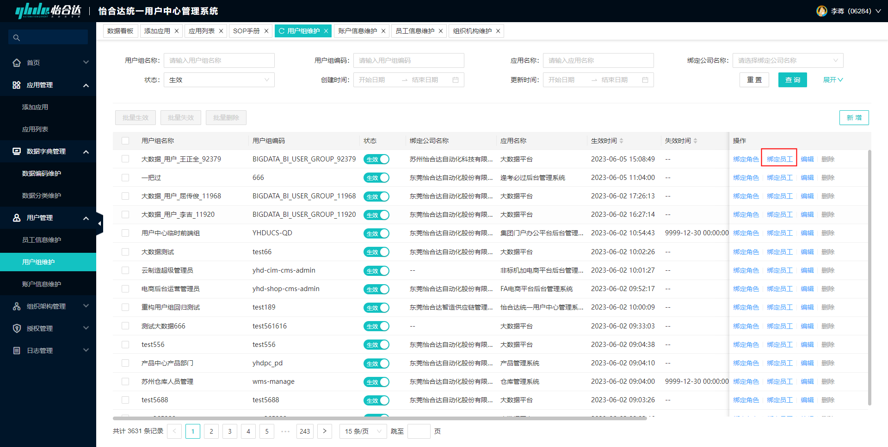
图2- 1
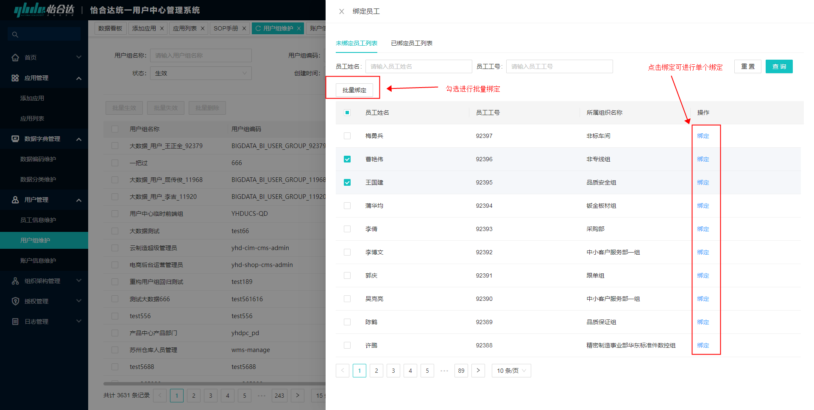
图2- 2
根据 FB 系统要求，需要授权给组织：IT 研发部，如下授权组织图；
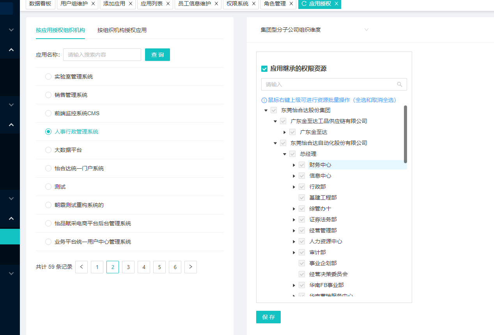
授权组织图
管理员新增一套自己系统的角色。比如 BI 系统需要创建三个主要角色，需要进入：
权限系统--》FB 后台管理系统--》角色管理--》新增角色；角色名称以系统为前 缀加“-”再加自定义角色名称，同一个系统中角色名称不能相同；
角色编码也是一样，前面系统的英文简写加“-”再加自定义编码，必须都是字母。
新增三个角色：
1，FB 系统-管理员角色（fb-cim-cms-role-admin）；
2，FB 系统-跟单员角色（fb-cim-cms-role-pmc）；
3，FB 系统-工程师角色（fb-cim-cms-role-engine）
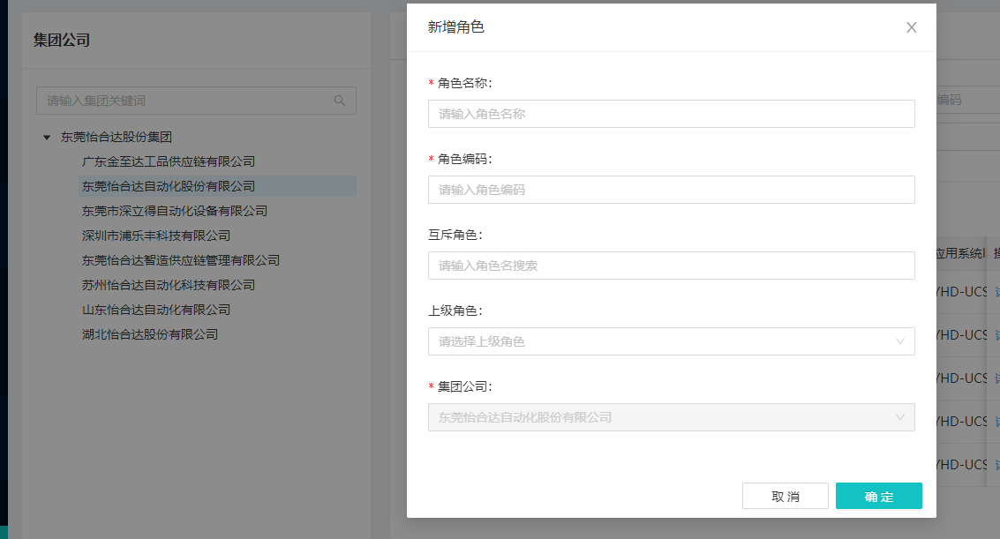
1，FB 系统-管理员角色关联 FB 系统-管理员用户组
2，FB 系统-工程师角色关联 FB 系统-工程师用户组
3，FB 系统-跟单员角色关联 FB 系统-跟单员用户组
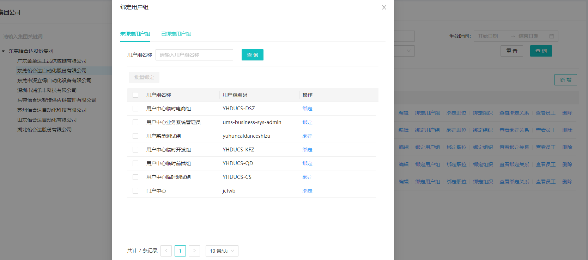
1)、业务系统前端原型设计后，将所有资源进行整理，进行新增资进入权限系统-->FB 后台管理系统-->资源管理-->新增资源，如下截图所示：
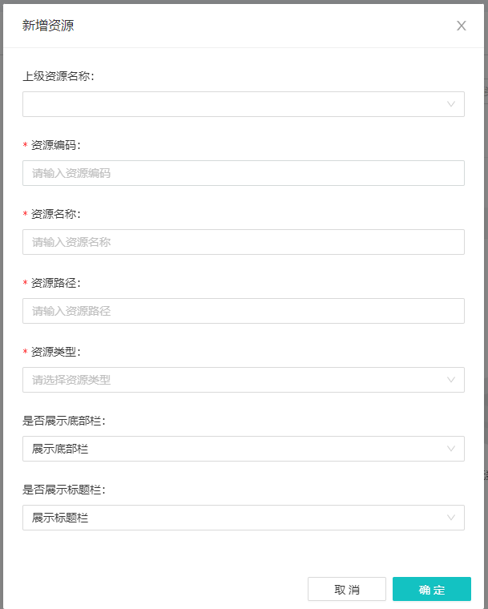
新增资源后，如下图：
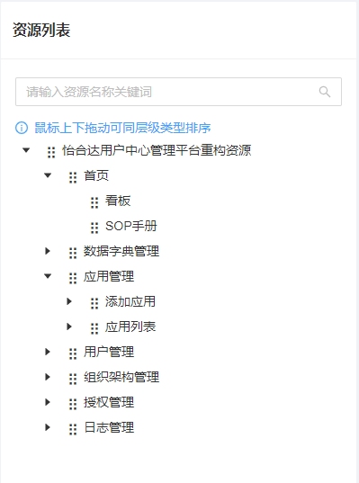
用户中心模板下载
当配置好所有角色管理，就需要将角色和资源进行关联，进入授权管理 -->权限系统-->FB 后台管理系统-->授权管理
授权管理也分为两种方式进行授权：
1，按角色授权资源，将角色和权限进行关联起来，如下图：
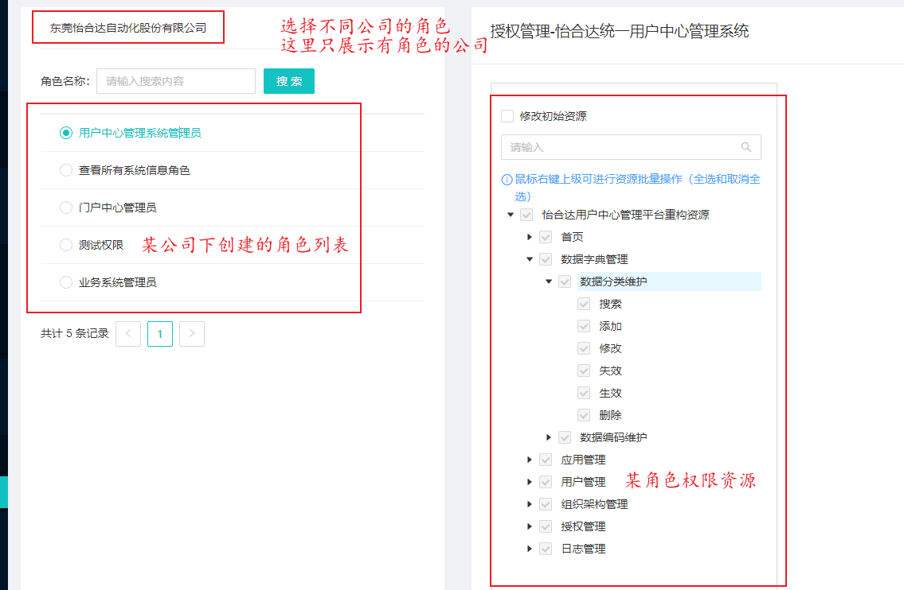
进入用户中心统一登录界面进行登录，所有在职员工都可进行登录，登录用户的账户为自己的工号，密码为公司分配的电脑密码，如果没有公司分配的电脑，联系信息中心基础服务开发部基础服务开发组的郭朝阳（07776）进行处理
登录页面如下：
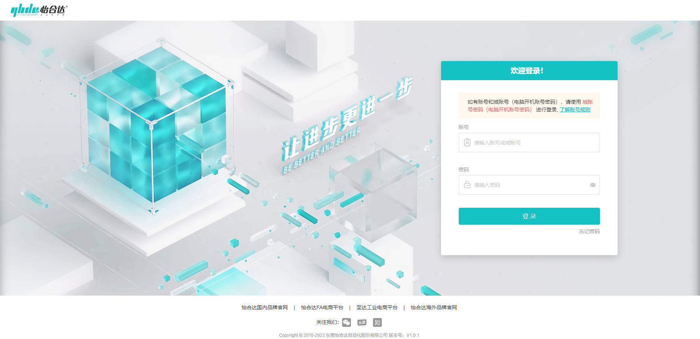
统一门户系统修改密码如下图：
进入路径 登录-->统一门户-->右下角修改密码
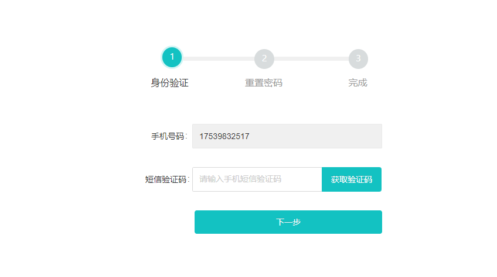
首页用来统计用户中心接入用户中心，用户量，角色量，总用户组量，组织单元量，岗位量
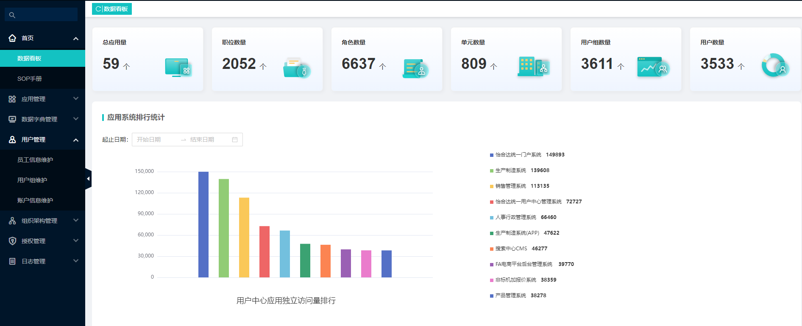
操作员操作之前必须查看的操作手册，可以直接下载文档或者浏览阅读。
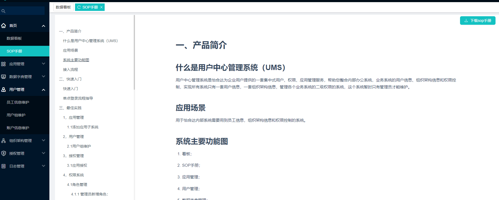
添加应用，用来业务系统接入用户中心的系统详情和申请 appid，secretKey，resourceId。
应用图标：应用的 logo
应用中文名称：业务系统的中文全称；
应用英文名称：业务系统的英文简写，很重要，用户中心用来生成资源ID的，资 源ID是指接入用户中心的系统编码，如下面用英文名称，用户中心会给云制造系统生成一个yhd-service-yzz的资源ID，资源id就是开发系统的应用名。
应用类型：分为web应用和app应用两种，暂时只支持web应用；
应用分类：
应用简介：简单介绍应用系统的详细内容，不能超过三百字。
开发负责人：用来做应用系统修改信息的通知人。
应用系统首页地址：业务系统接入用户中心后默认的回调 URL；
通知类型：员工信息变更是否通知设置；
员工信息变更通知地址：业务系统用来接收全部员工信息的通知地址；
组织架构信息变更地址：业务系统用来接收全部组织架构信息变更的通知地址；
推送类型：员工信息和组织架构信息变更的通知类型；
通知邮箱： 接收应用接入后的appId和密钥以及资源id
支持的授权模式：可以哪种方式获取token
用来管理接入用户中心的应用列表维护，可以对系统信息修改，重置secretKey(密钥)，授权等操作：
如下图：
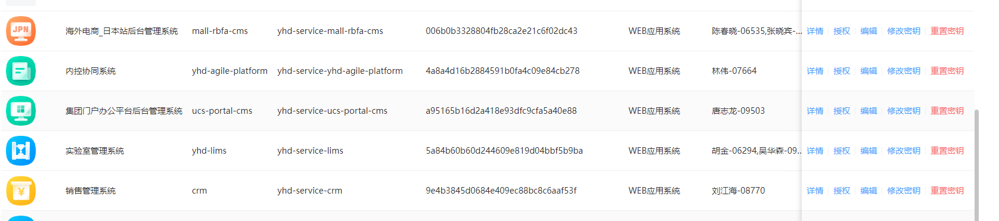
1，修改：
(1) 可以修改应用图标，应用名称，应用类型，首页地址，员工信息通知地址
和组织架构变更地址，通知类型。不可修改应用英文名称
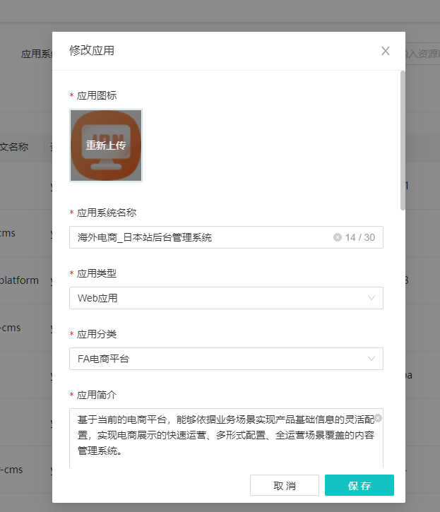
2，修改秘钥：
如果秘钥需要修改，秘钥修改请谨慎，会通知到业务系统负责人，需要修改开
发业务系统的秘钥。
3，授权：
会跳转到权限系统-->应用授权-->按应用授权组织下进行访问应用授权。
4，详情：
查询接入用户中心系统的详情内容。
用于数据的类别维护，比如员工信息里面的学历，政治面貌，民族等基础数据的类 别信息。在这里可以新增，修改，生效，失效和删除等操作，其中生效操作必须是失效 才能操作，失效操作必须是生效的类别数据并且分类下面的数据编码不存在使用才能操 作，删除是失效之后才能删除，删除之后不能做任何操作。
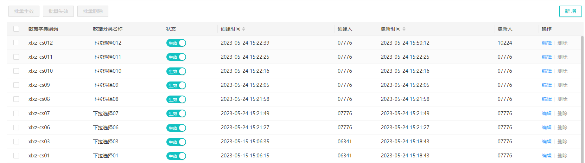
用于数据的编码值维护，比如上面提到的学历有大专、本科等，政治面貌有团员、党员等，民族有汉、苗等基础数据的类别信息。在这里可以新增，修改，生效，失效和 删除等操作，其中生效操作必须是失效才能操作，失效操作必须是生效的数据才能操作，删除是失效之后才能删除，删除之后不能做任何操作。
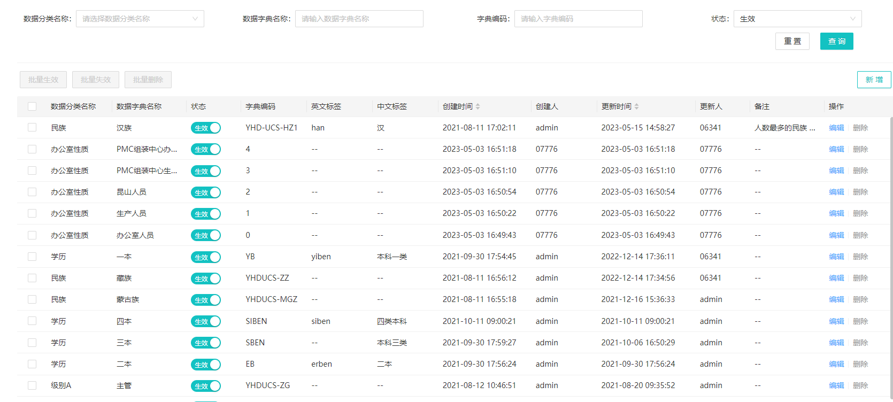
用于维护员工信息管理。在这里可以绑定用户组，绑定职位，绑定组织，查看角色等操作。
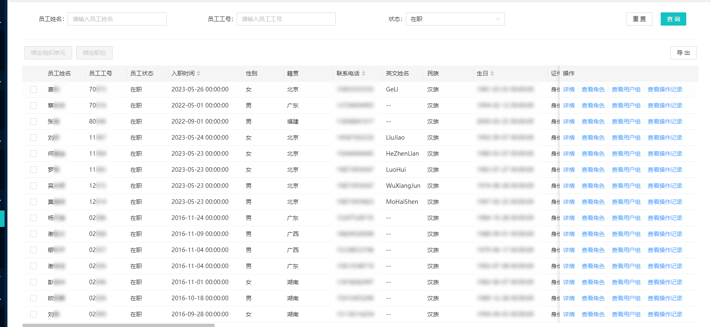
绑定用户组：
加入某个用户组，可以绑定多个用户组，加入用户组就是加入用户组绑定的角色，会得到用户组绑定角色的资源权限和访问权限。
绑定组织单元：
加入某个组织单元，默认显示员工新或修改时的组织单元，可以绑定多个组织单元，加入组织单元就是加入组织单元绑定的角色，会得到组织单元绑定角色的资源权限和访问权限。
绑定职位：
加入某个职位，，默认显示员工新增或修改时的职位，可以绑定多个职位，加入职位就是加入职位绑定的角色，会得到职位绑定角色的权限。
详情：
查看员工的详细信息。
查看角色：
查看员工所拥有的角色，分不同系统不同的角色。
查看用户组：
查看员工所加入的用户组。
查看职位：
查看员工所绑定的职位。
查看组织单元：
查看员工所绑定的组织单元。
查看操作记录：
查看员工做离职，停职，转岗和复职的操作记录。
用于用户组的维护，具体功能有新增，修改，绑定员工，绑定角色，生效，失效和删除等；
用户组主要用于应用授权的访问权限，关联角色来控制功能权限，主要用于跨 组织单元的新增，还有管理人员的新增的角色。例如：如果 wms 系统，能访问的 有横沥的某几个开发，测试，运维部的供应链组等，可以将他们新建成一个用户组。
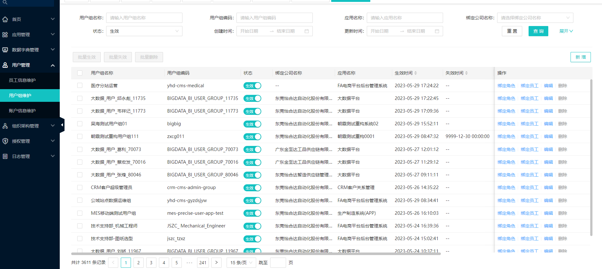
新增：
新增用户组信息，主要信息有用户组名称和用户组编码。
修改：
修改用户组信息，修改主要信息有用户组名称和用户组编码。
绑定员工：
用户组去绑定员工，让员工加入本用户组，如果该用户组绑定了角色，那么该用户组会 有角色授权的资源权限。
绑定角色：
用户组去绑定角色，使用户组拥有绑定的角色来得到权限资源。
生效：
生效用户组状态，失效状态才能生效，删除状态不能生效。
失效：
生效状态能失效，删除状态不能失效。
删除：
做删除操作，删除之后只能查看信息不能做其他操作。
维度分为行政维度，财务维度等，其中 集团型分子公司组织维度 是企业真实的维度，不能删除， 这里可以实现多维度的组织来维护，维度维护的功能有新增，修改，生效，失效，删除。
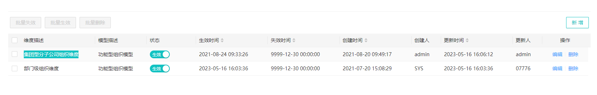
新增：新增维度信息
修改：修改维度信息
生效：生效维度信息，失效的才能生效，由于默认是生效的，必须用状态来搜索失 效的数据才能生效。
失效：失效维度信息，生效的才能失效，失效不能修改。
删除：失效的才能删除，删除之后，不能再生效，也不能修改，做的是逻辑删除。
主要维护组织单元

主要维护职位信息
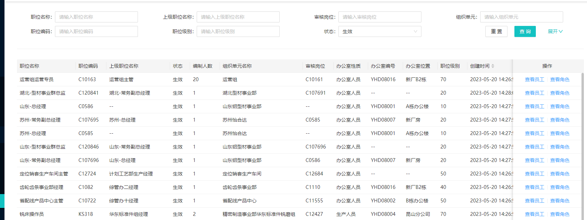
管理员应用授权（为控制系统的第一级权限，访问权限，一个账户如果需要取得资 源权限，必须先通过访问权限，分下面四种方式二种不同角度来授权）：
需要给应用能访问进行授权：
分二种角度四种不同方式来授权，分别是：
2，从组织角度来授权：
1.1 按应用授权组织机构：
按应用去授权给组织，那么该组织下的所有员工都可以访问该应用。这是 授权的第一级权限，访问权限。
1.2 按组织机构授权应用：
从反方向的组织的角度去授权给应用访问权限，需要注意的是当点击某个 组织单元时，显示的是这个组织单元能访问的应用，并不是他的上级组织单元 也有这个权限，如下图一怡合达有三个系统的访问权限，图二的 IT 研发部确 有 4 个应用系统的权限：
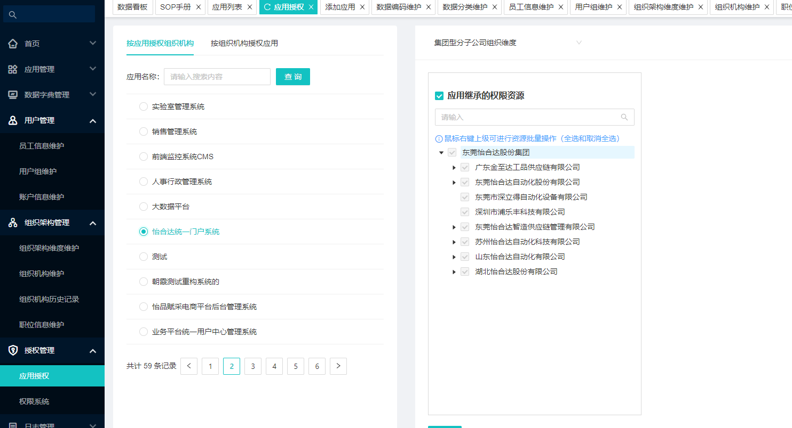
图一

图二
用来控制资源二级权限的各个系统列表，有角色管理，资源管理和授权管理，点击系统进入对应的系统权限管理。
展示系统下的角色列表，默认查询“生效”状态下的角色。
1.1 新增角色：
管理员新增一套自己系统的角色，比如 BI 系统需要创建三个主要角色.需要进 入权限系统--》FB 后台管理系统--》角色管理--》新增角色；角色名称以系统为前 缀加“-”再加自定义角色名称，同一个系统中角色名称不同相同；角色编码也是 一样，前面系统的英文简写加“-”再加自定义编码，必须都是字母。
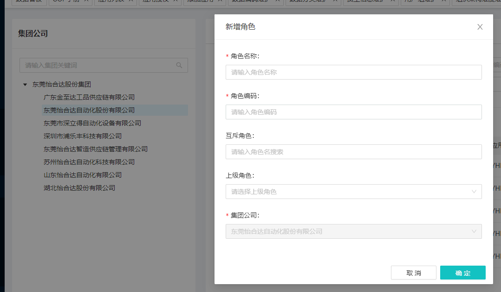
1.2 修改角色：
修改角色可以修改角色名称和角色编码，遵循的修改原则和新增角色一样。
1.3 失效角色：
失效角色后，此角色不能使用，此角色关联的职位，组织和用户组下的员工会失去此角色的权限。例如，上面的跟单员角色，假设关联了研发部下的“基础应用组”的组织单元，还关联了 IT 运维部下的“IT 运维部经理”这个职位，还关联了我新建的一个“FB 系统-跟单员用户组”的用户组，这个用户组下有两个员工，那么“基础应用组”组织单元下的员工和“IT 运维部经理”这个职位下的员工，还有“FB 系统-跟单员用户组”的用户组下的员工都会失去这个角色的权限。
1.4 生效角色：
失效之后的角色是可以生效的，但是删除的角色是不能生效的。
1.5 删除角色：
只有等到角色失效之后，角色才能删除。
1.6 查看员工：
可以查看角色下有哪些员工拥有。
1.7 查看用户组：
可以查看角色关联了哪些用户组。
1.8 查看组织：
可以查看角色关联了哪些组织。
1.9 查看职位：
可以查看角色关联了哪些职位。
1.10 关联用户组：
点击之后会显示已经关联的用户组等同于上面 3.7 的查看用户组，这里可以取消关联操作，也可以“关联用户组”操作，会去查询有权限访问的用户组，有权限访问的用户组是指在授权给了该应用的用户组才能关联。
1.11 关联职位：
关联职位，是该职位下的员工拥有此角色的权限。能关联的职位必须是能访问该应用系统下的职位，例如，FB 系统只能综管十四办有权限访问，那么能关联的职位只能是综管十四办下的职位，这里最好设置了职位角色就不要去设置下面 1.12的组织，因为假设你关联了综管十四办，那么综管十四办下的所有员工都是拥有这个角色的权限的，你再来关联综管十四办的职位没有意义。
1.12 关联组织：
关联组织，是该组织下的员工拥有此角色的权限。能关联的组织必须是能访问 该应用系统的组织单元。
展示系统下的资源，左边展示资源的结构，右边展示资源的详细信息，右边默 认展示生效状态的资源，如果需要查看全部状态下的资源，需要切换状态，如果需 要查看不能的资源类型，需要切换资源类型。
1.1 移动资源：
左边展示的资源列表中，同一个资源类型和级别的位置可以移动，移动的展示 顺序就是系统展示的资源顺序。例如，下图我将“首页”移到“数据字典管理”下，那么系统的“数据字典管理”会展示在第一个菜单，“首页”会展示到“数据字典 管理”之下。
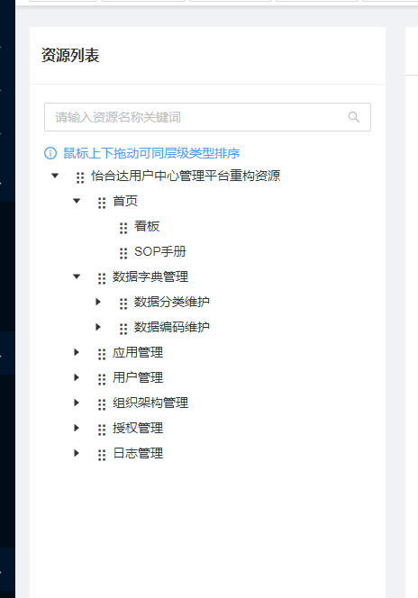
2.2 新增资源：
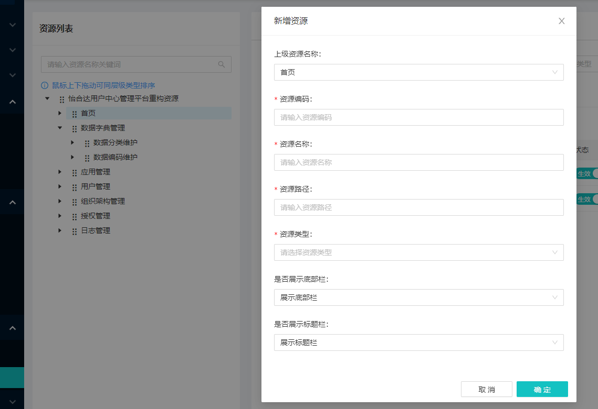
新增资源信息
资源编码：
资源的标识，整个系统下必须唯一，编码建议格式为应用系统的英 文缩写+“-”+“自定义功能的英文缩写”，这是前端用来标识展示的页面功能的。
资源类型：
资源类型分为三种，模块，菜单和功能；遵循模块--》菜单--》功 能的递减模型，所以当你选择下面的上级名称后如果是模块，资源类型可以选择模 块，菜单和功能，但是如果上级资源为菜单，那就只能选择菜单和功能，依次类推。
资源名称：
资源的描述，同一个上级资源下的名称不能相同。资源路径：该资源的第一访问路径，如果存在多个访问路径，需要用功能来处 理，并且是绑定功能，比如，我现在的这个资源管理菜单，需要有两个功能，第一 展示左边的树，第二，展示右边的资源信息列表。那么我需要建立两个功能，如下 图：
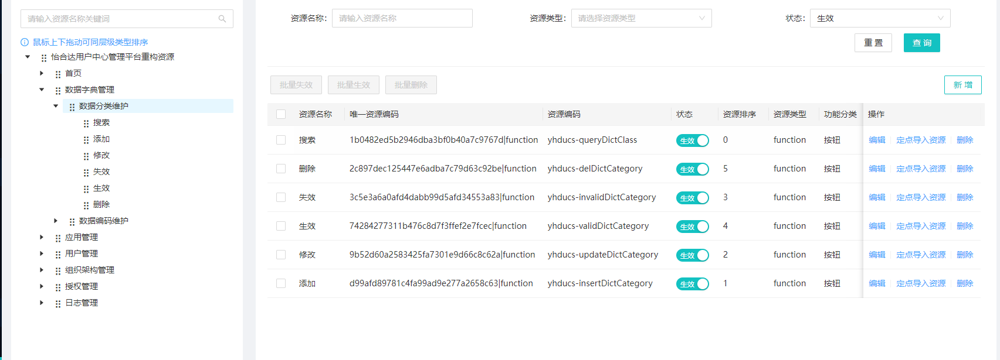
上级资源名称：
指定上级资源，能影响上面的资源类型的选择，点击左边的资 源和勾选右边的资源都能回显到此处。
功能分类：
如果是资源类型是功能才会显示，分绑定功能，单独按钮，tab 和 其他四种类型，其中绑定功能的意思是如果是授权给上级资源，那么这个绑定功能 直接会绑定，单独按钮是比如菜单下的这种新增，修改，删除的按钮操作功能，tab 是指比如菜单下的 tab.
2.3 修改资源：
修改资源信息和新增资源信息的规则一样。
2.4 生效资源：
同一失效状态下的资源都可以生效。删除状态的资源不能生效。
2.5 失效资源：
生效状态下的资源可以失效，失效之后可以生效，也可以删除。
2.6 删除资源：
失效状态下的资源才能删除，删除之后不能失效。
按角色授权资源 左边显示角色列表，右边展示资源列表，来进行授权资源，达到资源权限 的控制。需要注意的是，右边上面有一个修改初始资源，如果是勾选表明，需 要修改原有的授权资源，如果不勾选，可以新增原有授权资源的其他资源。
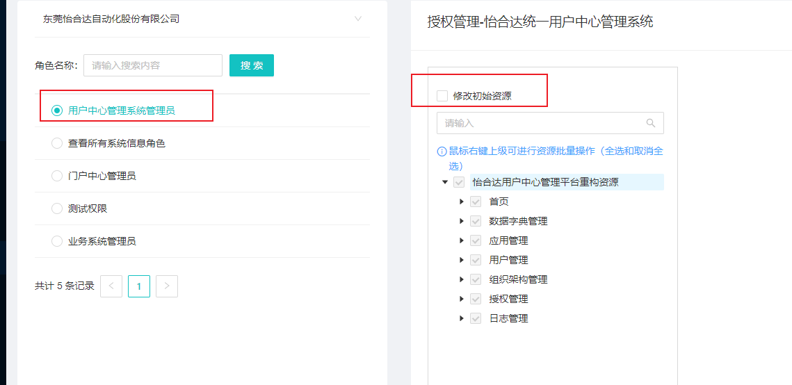
角色关联组织时找不到对应的部门或岗位：查看应用授权是否授权给该部门资源授权了但是用户进入之后没有找到： 查看是否连同上级资源一同授权登录用户中心之后没有看到想看到的系统：登录用户不是想看系统的负责人，需联系用户中心管理员或业务系统管理员进行修改应用 添加应用的负责人
附件：